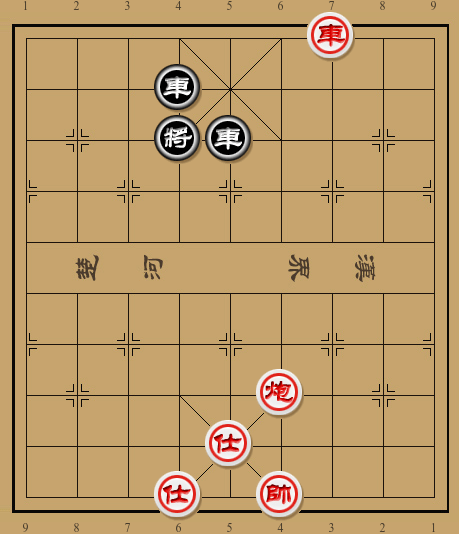
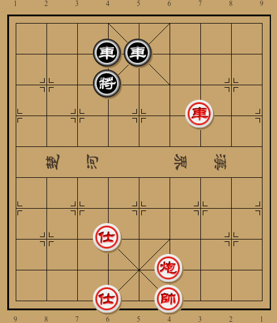
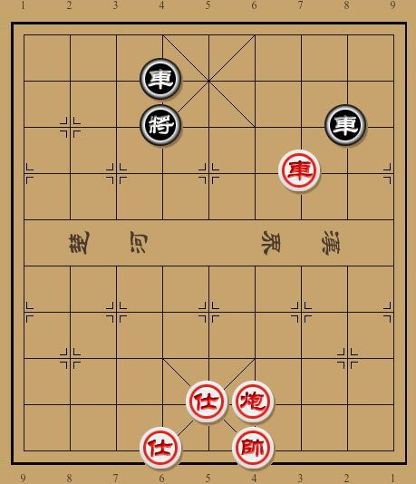
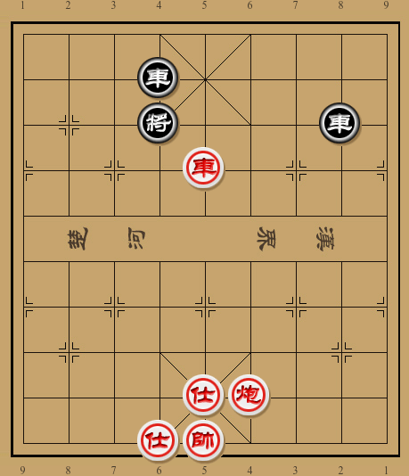
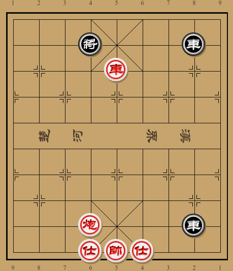
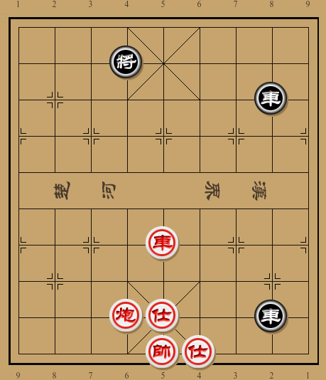
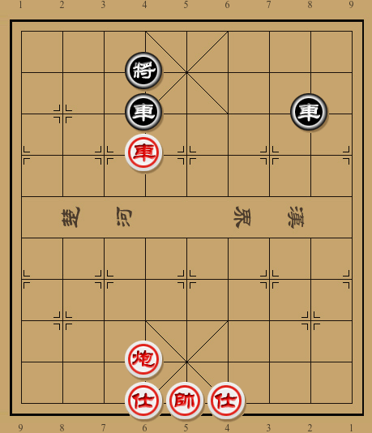

One minute
排局-05

6R2/3r5/3kr4/9/9/9/9/5C3/4A4/3A1K3 w
如图，红方似乎可以车三退三叫杀得车．可红方的取胜之路真的如此简单嘛？
显然不是这样简单–不过黑方的应对也可谓奇思妙想:
- 车三退三 车５退１!
一着花心车龟缩防守，红方也暂时无计可施．此时平车打将会自找麻烦，因为黑方平将躲避后会形成兑车，红方反而不好处理．不过借打将之机调整炮位，进而扬士叫杀似乎是可行之策．
- 车三进一 车５进１
- 炮四进五 车５退１
- 炮四退六 车５进１
- 车三退一 车５退１
- 仕五进六

此时红方伏有炮四平六，将４平５，车三平五的杀着．黑方不能车５平６牵炮，因为红方车三进一绝杀．其他解杀手段均会丢４路车．看似红方已经取得了胜利，但这真的是黑方最顽强的抵抗嘛？非也！惯性思维导致黑方在第５回合还是退花心车，但此时红炮的位置已经挡住了自己的老帅，所以黑方可以车５平８反杀！
５． 车５平８！

此时红方无暇抽车，只有借打将之机先占中路，然后进帅做杀：
- 车三平六 将４平５
- 车六平五 将５平４
- 帅四平五

此时黑方有两种防守方法，均难逃一败：
a.
- …… 车４平８
- 仕五退四 前车进１
- 车五进一 将４退１
- 炮四平六 前车进５

此路变化黑方双车并线，与红方邀兑．无奈红方借先手打将，进而运炮卡位，胜势已成．前车进５是比较顽强的防守．如果后车进１？则车五进一！将４退１，车五退四，红胜定．注意这里车五进一的过们是必须的，如果直接车五退三，黑方有前车进２！红方车五平六，黑有后车平４，反而节外生枝．
- 仕六进五 后车进５
- 车五退一 后车退４
- 车五退三
以上几步红方顿挫井然，如下图形势，黑方如果动前车，则红方士五进六得车胜．黑方如果动将或者移动后车，如将４退１，红方仍有士五进六，弃炮绝杀！以下黑方前车平４，车五平六，车８平４，车六进四绝杀红胜．

此路变化，黑方竖向连车难以抵挡红方进攻，如果改为横向会怎样呢？
b.
- …… 车４平７
- 仕五退四 将４退１
- 炮四平六 车７进１
- 车五平六 车７平４

此路变化黑车会被红方栓住，但以炮换车红方只能得到和局，所以红方并不会轻易交换．
- 仕六进五 车８平５
- 炮六退一 红胜定
红方士六进五，暗伏车六进一，将４进１，士五进六绝杀．黑方不能简单车８进１弃车解杀，否则仍是车六进一，将４进１，士五进六，红得车亦胜．
从最初的车三退三看似一步即胜，到后来的占中，架炮，红方的取胜之路可谓曲折．